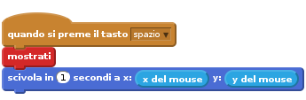
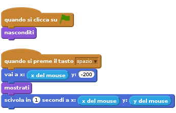
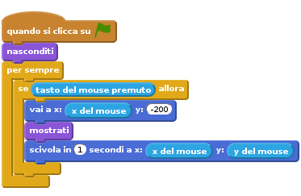
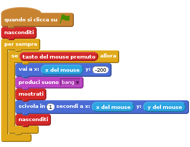
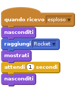
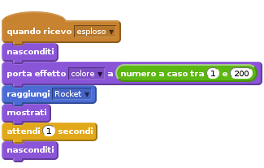
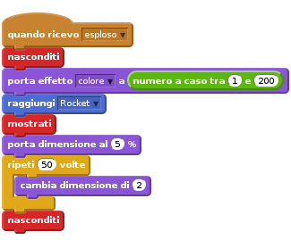
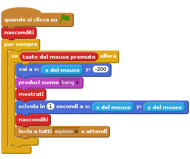

Introduzione
In questo progetto creiamo l’esplosione dei fuochi artificiali su una citta’ Italiana.

Passo 1: Crea un razzo che vola verso il puntatore del mouse
Importiamo tutte le immagini necessarie per questo gioco
Lista delle Attivita’
- Crea un nuovo progetto Scratch. Rimuovi il gatto Felix con click-destro e seleziona cancella.
- Nel tab
Sfondiaggiungi un nuovo sfondo. Fai click suCarica uno sfondo da un file. Vai nella cartellaResourcese seleziona torino_sfondo.png - Fai click su
Carica uno sprite da un filee seleziona rocket.png dalla cartellaResources Rendi il razzo invisibile all’inizio del gioco
Adesso vogliamo che quando facciamo click il razzo voli verso il puntatore del mouse. Aggiungi il blocco
quando si preme il tasto spazio, sotto di questo visualizza il razzo e fallo scivolare (volare) verso il puntatore del mouse
Verifica il tuo progetto
Fai click sulla bandierina verde, posiziona il tuo mouse nello stage a premi la barra spaziatrice.
- Vedi il razzo apparire e muoversi verso il puntatore del mouse?
- Cosa succede se muovi il mouse e premi dinuovo la barra spaziatrice?
Lista delle Attivita’
I fuochi artificiali tipicamente non volano lateralmente, quindi facciamo in modo che il razzo si muova verticalmente dal basso su fino al puntatore del mouse. Prima di visuallizare il razzo, inserisci il blocco
vai ain modo che il razzo vada nella parte bassa dello schermo e sia allineato con il puntatore del mouse.
Verifica il tuo progetto
Fai click sulla bandierina verde, posiziona il tuo mouse nello stage e premi la barra spaziatrice.
- Vedi il razzo apparire e muoversi dal fondo dello schermo verso il puntatore del mouse?
- Cosa succede se muovi il mouse e premi dinuovo la barra spaziatrice?
Lista delle Attivita’
Infine fai in modo che il razzo venga lanciato quando fai click anziche’ quando premi la barra spaziatrice. Per far questo possiamo racchiudere il nostro script in un blocco
per sempre se fai clicke sostituire il bloccoquando si preme il tasto spaziocon il bloccoquando di clicca su bandierina. Come ultimo passo assicurati che il razzo sia invisibile prima del click con il mouse.
Verifica il tuo progetto
Fai click sulla bandierina verde e fai click con il mouse nello stage. Adesso fai click in un altro punto
Cose da provare
- Prova a rendere alcuni razzi piu’ veloci o lenti degli altri.
- Prova a cambiare la posizione iniziale del razzo in modo che percorra un arco nel raggiungere il puntatore del mouse.
Salva il tuo progetto
Passo 2: Fai esplodere il razzo
Lista delle Attivita’
Il primo passo per far esplodere il razzo e fargli emettere un boato (Resources/bang.wav) prima che inizi a volare. Quindi una volta che ha raggiunto il puntatore del mouse lo facciamo scomparire. Per importare un suono vai al tab
Suonie fai click suCarica un suono da un file.
Adesso fai in modo che il razzo invii un segnale nel momento in cui esplode. Dopo faremo in modo di ascoltare questo messaggio.
![quando si clicca su @
nasconditi
per sempre
se <tasto del mouse premuto> allora
vai a x: (x del mouse) y: (-200)
produci suono [bang v]
mostrati
scivola in (1) secondi a x: (x del mouse) y: (y del mouse)
nasconditi
invia a tutti [esploso v]](ddef964d869143b4d0b6cb599ea9145ccb7cd39d.png)
Verifica il tuo progetto
Fai click sulla bandierina verde.
- Quando il razzo raggiunge il puntatore del mouse emette un boato e scompare?
Lista delle Attivita’
- Crea un nuovo sprite caricando il file Resources/firework1.png
Quando lo sprite appena aggiunto, riceve il messaggio
esplosionedeve scomparire, posizionarsi sul razzo usando il bloccovai a, apparire per 1 secondo e poi sparire dinuovo.
Verifica il tuo progetto
Lancia un altro razzo.
- Riesci a vedere il razzo che esplode ed il fuoco artificiale comparire?
- Cosa succede se tieni premuto il tasto sinistro del mouse e contemporaneamente lo muovi? (Non ti preoccupare, risolveremo il problema dopo)
Salva il tuo progetto
Passo 3: Rendi ogni esplosione unica
Lista delle Attivita’
Adesso possiamo rendere ogni esplosione unica usando il blocco
cambia effetto colorecon un colore a caso compreso tra 1 e 200 prima di visualizzare il fuoco d’artificio.
Verifica il tuo progetto
Fai click sulla bandierina verde.
- Le esplosioni sono tutte di un colore diverso?
Lista delle Attivita’
- Adesso aggiungiamo altri tipi di fuochi artificiali aggiungendo nuovi costumi per lo sprite. Usa Resources/firework2.png e Resources/firework3.png e cambia il costume per ogni razzo prima di visualizzarlo.
Verifica il tuo progetto
Fai click sulla bandierina verde.
- Riesci a lanciare tipi diversi di fuochi artificiale?
Lista delle Attivita’
Infine rendiamo l’esplosione piu’ grande dopo che il razzo esplode! Anziche’ aspettare per 1 secondo, porta la dimensione dello sprite al 5% e dopo che e’ visualizzato aumenta la dimensione dello sprite di 2 per 50 volte usando un blocco
ripeti.
Verifica il tuo progetto
Fai click sulla bandierina verde.
- L’effetto esplosivo inizia dal centro del razzo e si espande gradualmente?
Cose da provare
- Perche’ non provare a rendere ciascun esplosione ancora piu’ unica variando la dimensione e la velocita’ dell’esplosione stessa?
Salva il tuo progetto
Passo 4: Risolvere il problema dell’esplosione incompleta
Ti ricordi che nei passi precedenti abbiamo riscontrato che tenendo premuto il pulsante del mouse l’esplosione del razzo era incompleta? Cio’ succede perche’ quando il razzo invia il messagio esploso, lo script ricomincia immediatamente e riposiziona il razzo al fondo dello schermo. Cio’ avviene prima che l’esplosione si muove alla posizione del razzo.
Lista delle Attivita’
Per risolvere questo problema, possiamo rimpiazzare il blocco
invia a tutticon un bloccoinvia a tutti e attendi. In questo modo il ciclo non si ripetera’ finche’ l’esplosione non sara’ completamente terminata.
Verifica il tuo progetto
Fai click sulla bandierina verde, tieni premuto il tasto sinistro del mouse and muovi il mouse in punti diversi dello stage.
- L’effetto esplosivo appare al posto giusto ed al momento giusto?
Salva il tuo progetto
Ben fatto!!! Hai finito con questo esercizio. Adesso divertiti con il tuo nuovo gioco!!!
Ehi, non dimenticare che puoi condividere il tuo gioco con tutti i tuoi amici e familiari. Basta che fai selezioni il menu File e poi Share to website!!